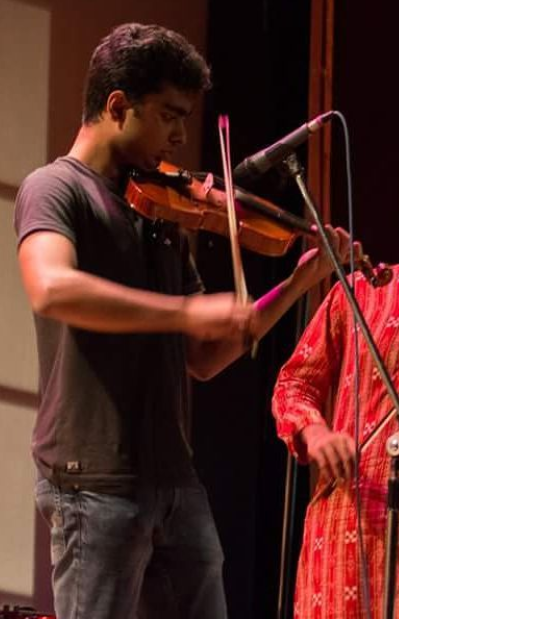
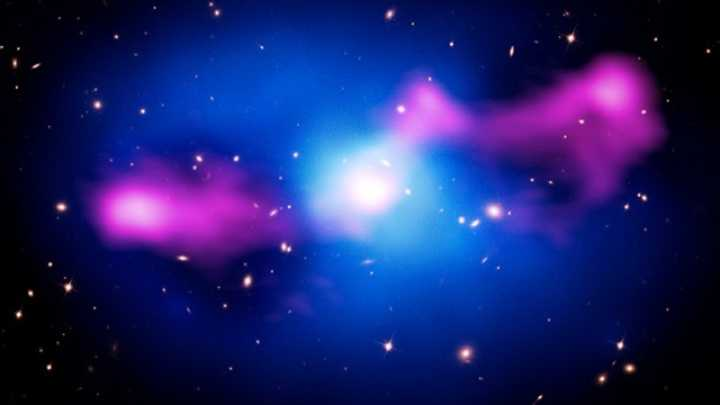

About Me

Employment:
Research Assistant
Department of Astronomy
University of Michigan, Ann Arbor
Education:
Master of Science 2021
Indian Institute of Science, Bangalore
Bachelor of Science (Research) 2020
Indian Institute of Science, Bangalore
Research Interests:
I am interested in various aspects of theoretical and computational astrophysics, including but not limited to:
- Galaxy formation and evolution
- Active galactic nuclei and their effect on the surrounding medium
- Stellar and galactic dynamics
Publications:
- Dattathri S, Sharma P. "Cosmological evolution of gas and supermassive black holes in idealized isolated halos".
MNRAS (submitted). arXiv link.
Research

Deprojection and Dynamical Modelling of Barred Galacies
I am currently working with Prof. Monica Valluri on developing a method to construct the 3D density distribution
of barred galaxies. The goal of the project is to use the deprojected densities to dynamically model barred galaxies
using Schwarzschild's method and calculate the masses of central supermassive black holes.
Semi-Cosmological Simulations of Baryonic Gas is Growing Dark Matter Halos
This was my Master's thesis with Prof. Prateek Sharma. Using hydrodynamic simulations, I studied the evolution of baryonic gas in
cosmologically growing dark matter halos. My model incoorporates various aspects of baryonic physics, such as radiative cooling
and AGN jet feedback, in a cosmologically ivolving background. I study the evolution of the halo gas and growth of supermassive
black holes under different radiative conditions.
Link to thesis and code repository.
Stellar Capture Rates in Galactic Nuclei Containing a Binary Black Hole
This was my Bachelor's thesis with Prof. Arun Mangalam. I analyzed the orbital dynamics of field stars around supermassive binary black holes
to develop a model for the flux into the loss cone of the primary black hole as a function of time. I made predictions for the tidal disruption
event detection rates and the fraction of them originating in binary black holes.
Link to thesis.
Turbulent Power Spectrum of the Interstellar Medium
I wrote a code from scratch in Python to analyze the turbulent power spectrum of the various phases of the interstellar medium. Using data from the LAB
survey. I also calculated the solenoidal fraction in the velocity field of the Orion B molecular cloud using data from the IRAM-30m telescope.
Link to report and code repository.
Computational Modelling of Scattering of Electromagnetic Waves by Nanoparticles
I used the software Discrete Dipole Scattering (DDSCAT) to investigate the wavelength dependence of the dielectric function and scattering cross sections
of nanoparticles of different compositions and sizes. I usedMie theory to obtain the corresponding theoretical results, and analyzed the discrepancies between
the two.
Link to report and code repository.
Thermodynamic Origins of Information Theory
I studied the physical and mathematical relationship between Shannon entropy and mutual information, and the thermodynamic quantities like Boltzmann entropy and
free energy. I investigated the physical nature of information by analyzing the Maxwell demon paradox, Szilard engine, and the black hole information paradox.
Link to report.
Orbital Dynamics in the Hierarchical Three-Body Problem
I studied the hierarchical three-body setup and used the secular approximation to obtain equations of motion for circulating and librating orbits. I analyzed the
stability of these orbits in the presence of a distant perturber.
Link to report.
Contact
Email: shdatta@umich.edu
Address: 107 Fieldcrest St, Apt 102
Ann Arbor, MI, USA 48103